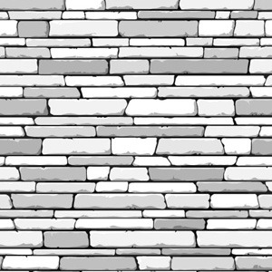
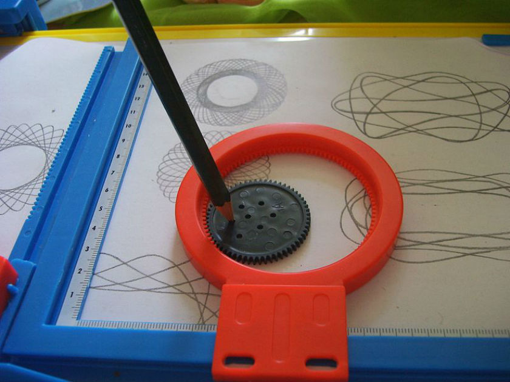
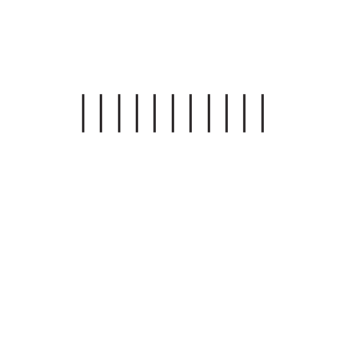
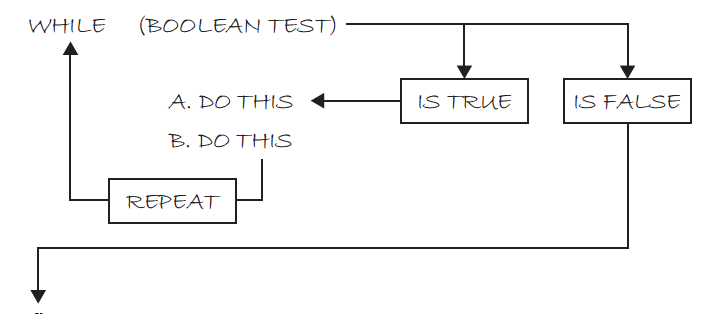

Principios y fundamentos de Programación
Clase #4
Especialidad en Código Creativo | CENTRO 2016
-
Variables:
int,char,float,boolean -
Condicionales:
if (test) {}
if (test) {} else {}
if (test1) {} else if(test2) {}
En esta clase...
- Bucles (a.k.a loops): ¿Qué es iterar?
-
Bucles en Processing:
while,for - Bucles de bucles
- Funciones
Bucles (a.k.a loops)
Hacer un bucle es el proceso de repetir un conjunto de instrucciones, o de acciones.
Bucles (por ejemplo...)

Bucles (por ejemplo...)


Bucles
A cada repetición que se hace en un bucle se le conoce como iteración. Es por esto que a los bucles también se le conoce como Iteraciones.
Bucles (otro por ejemplo...)
Pintar muchas líneas...
Pintar muchas líneas...
size(200, 200);
background(255);
// Lineas
stroke(0);
line(50, 60, 50, 80);
line(60, 60, 60, 80);
line(70, 60, 70, 80);
line(80, 60, 80, 80);
line(90, 60, 90, 80);
line(100, 60, 100, 80);
line(110, 60, 110, 80);
line(120, 60, 120, 80);
line(130, 60, 130, 80);
Pintar muchas líneas...
size(200, 200);
background(255);
// Lineas
stroke(0);
int y = 80; // Posicion en y de las lineas
int x = 50; // Posicion en x de las lineas
int spacing = 10; // Espacio entre lineas
int len = 20; // Largo de cada linea
line(x, y, x, y + len);
x = x + spacing;
line(x, y, x, y + len);
x = x + spacing;
Pintar muchas líneas...
El algoritmo sería:
- Guarda la posición en X de la línea, comienza en 30.
- MIENTRAS no hayas llegado a 100px en X
- Dibuja una línea usando la coordenada X.
- Mueve la posición X 10 pixeles.
while
Como te puedes dar cuenta, el algoritmo anterior
repite la acción (pintar lineas) hasta que se deja de cumplir
una cierta condición.
Esta condición se prueba al dibujar cada línea,
y se debe tomar una decisión: detenerse o repetir.
while
En Processing, la estructura while se ocupa
para ejecutar un bloque de código mientras una condición
es cierta.
Igual que la estructura if, while
ocupa una expresión booleana para expresar esa condición.
while - Semántica
while - Sintáxis
while(< test >) {
// Instrucciones que se repetirán
}
while - Ejemplo
Si programamos el algoritmo anterior:
size(200, 200);
background(255);
// Lineas
stroke(0);
int y = 80; // Posicion en y de las lineas
int x = 50; // Posicion en x de las lineas
int spacing = 10; // Espacio entre lineas
int len = 20; // Largo de cada linea
// La condición es que las líneas las pintemos con una coordenada menor a 100
while(x < 100) {
line(x, y, x, y + len);
x = x + spacing;
}
Funciones
Cuando un sketch comienza a ser más complejo,
no es conveniente tener que todo su código
esté en un solo bloque.
Porque es confuso y difícil de editar.
Funciones
Lo conveniente, y lo